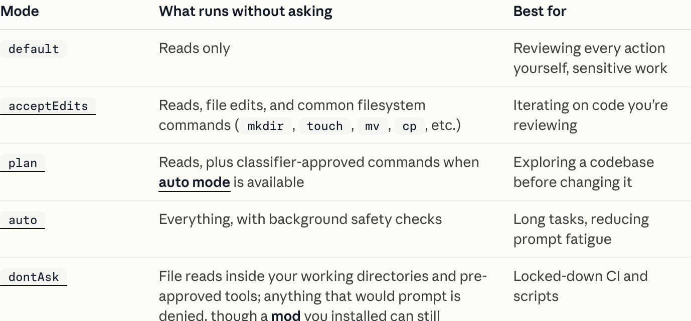

1회차 · 1교시Agentic Engineering 실무 · 2026-11-05
AI는 어떻게
코딩을 맡게 되었나
다음 줄을 제안하던 AI가 며칠짜리 일을 끝까지 해내기까지, 5년 동안 무엇이 쌓였는지 봅니다.
2021자동완성
2023IDE 채팅
2025터미널 에이전트
2026에이전트 팩토리
2021 → 2026검증한 연표 · 공식 발표문 · CHANGELOG
AI 코딩 5년, 네 시대
2021-06-29GitHub Copilot 기술 미리보기 · 2022-06-21 정식 출시
자동완성: 함수명과 주석을 보고 빈칸을 채운다
github.blog/news-insights/product-news/introducing-github-copilot-ai-pair-programmer
공식 발표 화면 캡처
“When you type code or comments, GitHub Copilot suggests the next line of code.”GitHub Blog · 2022-06-21
- 사람이 쓰고, AI는 다음 줄과 함수 본문을 제안
- 보는 범위는 열린 파일, 커서 앞뒤
- 실행과 검증은 전부 사람 몫
→ 2교시에서 자세히
2022-11-30 · 2023-03-22ChatGPT 공개 · Copilot Chat(Copilot X) 발표
IDE 채팅: 묻고 받고, 옮기는 건 사람
github.blog/news-insights/product-news/github-copilot-x-the-ai-powered-developer-experience
공식 시연 영상 캡처
- 선택한 코드와 오류 메시지가 맥락
- 설명, 테스트 생성, 수정 제안까지
- 답을 붙여넣고 실행하고 오류를 다시 묻는 루프는 여전히 사람이 돌린다
→ 2교시에서 자세히
2023-06 · 2025-02-24Aider 첫 릴리스 · Claude Code 리서치 프리뷰
왜 IDE가 아니라 터미널이었나
터미널 에이전트는 사용자의 셸 권한으로, 사용자가 이미 쓰던 git · 빌드 · 테스트 명령을 그대로 실행합니다. 대신 무엇을 허락할지가 새 문제가 됩니다.
2025-03 → 2026-03편집·명령마다 승인 → 권한 모드 → 자동 승인
승인 피로: 프롬프트 하나에 승인 열 번
code.claude.com/docs/en/permission-modes

공식 문서 화면 캡처 · 2026-10-28 확인
93%
수동 승인 요청 가운데
사용자가 그대로 승인한 비율
Anthropic Engineering, 2026-03-25
“Claude Code auto mode”
→ 3교시: 권한 모델 · 9교시: 자동 승인